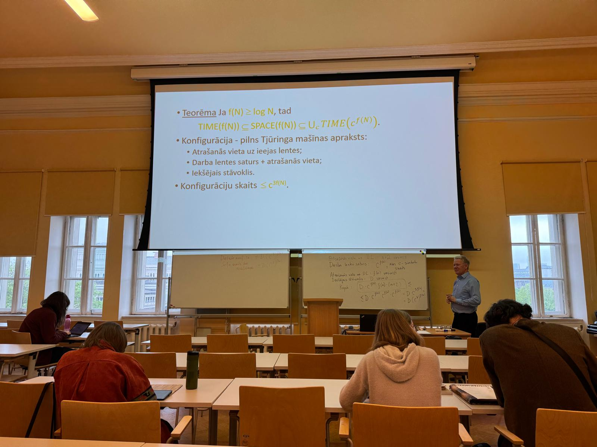
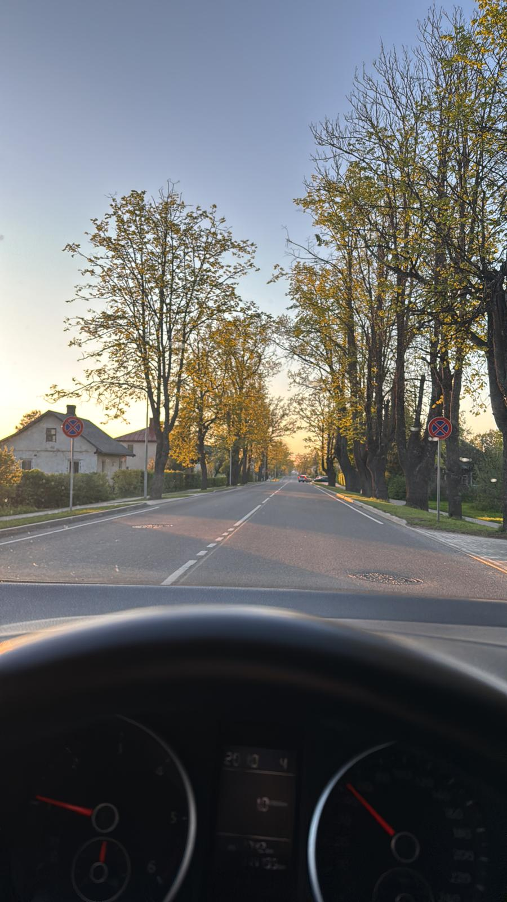
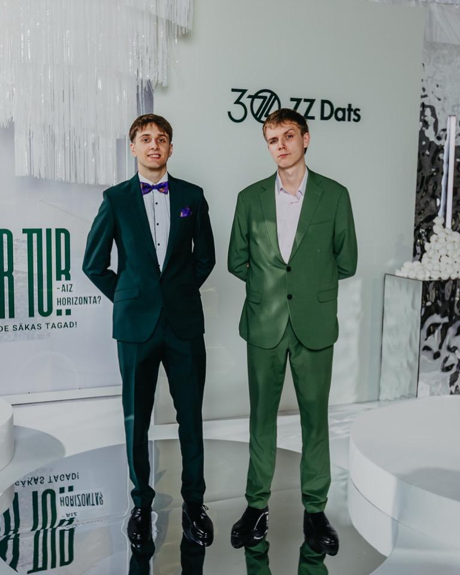
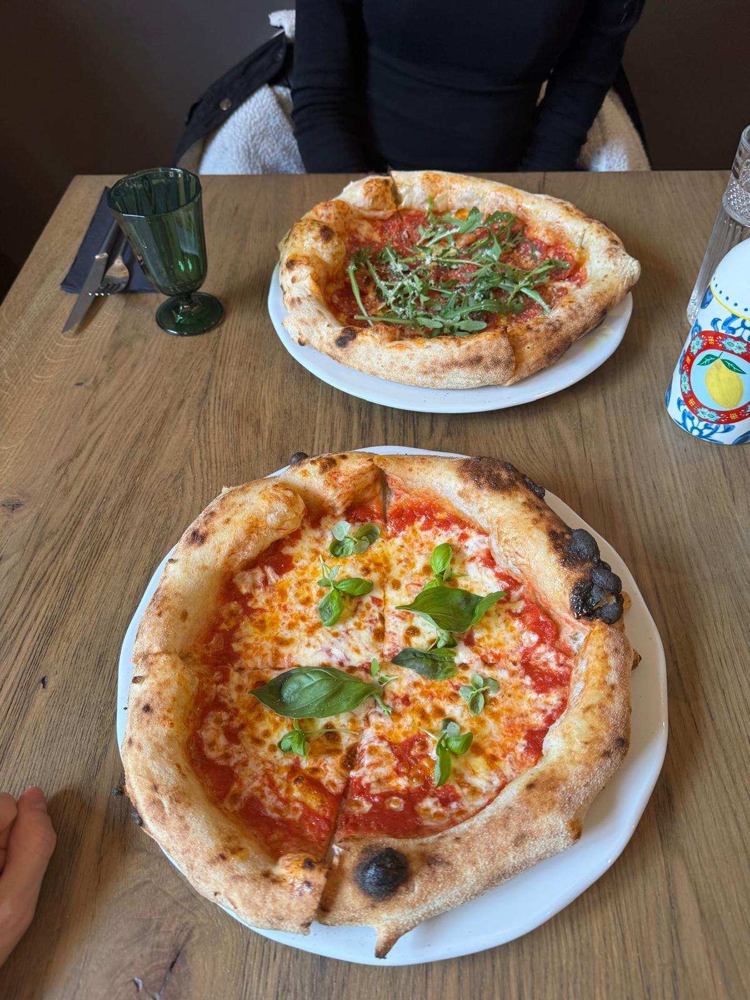
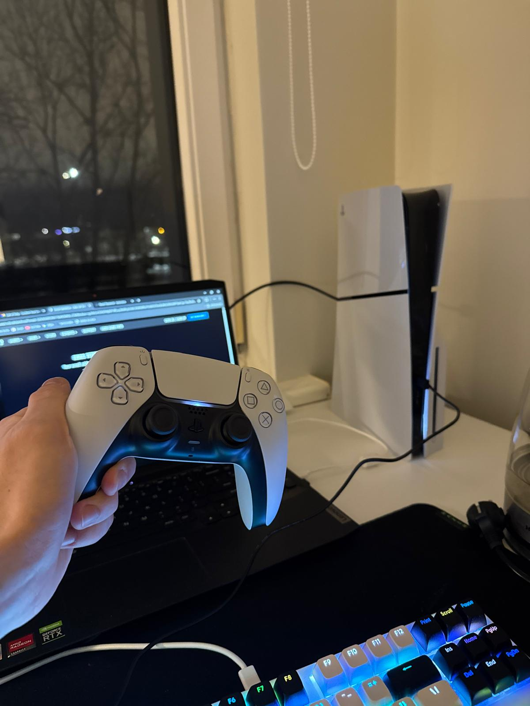

Universitāte
Lekcija auditorijā
Šajā attēlā redzama lekcija universitātes auditorijā. Tā labi parāda manu mācību dienas daļu,
jo lekcijās klausos pasniedzēja skaidrojumus, pierakstu svarīgāko un mēģinu saprast sarežģītākas tēmas.
Auditorijas vide man asociējas ar koncentrēšanos, disciplīnu un brīžiem, kad teorija kļūst par pamatu
praktiskiem uzdevumiem.

Ceļš
Pārvietošanās ikdienā
Es esmu no Gulbenes, un šeit ir redzams attēls kā es braucu.
Man bieži sanāk braukt no Gulbenes uz Rīgu un no Rīgas uz Gulbeni.
Es esmu pieradis pavadīt vismaz 3 stundas ceļā.

Pasākums
Ārpus lekcijām
Pusi no semestra pavadību ārpus studijām strādājot par programmētāju.
Ikdienā izstrādāju darbā interneta aplikācijas, bet attēlā redzams, ka atrodos
uzņēmuma organizētā pasākumā.

Atpūta
Pusdienas ārpus mājām
Attēlā redzama pica ko ēdu Pērnavā. Biju aizbraucis uz Pērnavu vienu dienu atpūsties.
Šo picu ēdu Pērnavas vecpilsētā. Sākumā gribēju citā vietā ēst vakariņas, bet tur bija daudz tūristu
un rinda bija nežēlīgi gara, tāpēc meklēju internetā citu vietu un atrado ļoti labu picēriju.

Vakars
Spēles vakarā
Vakarā pēc lekcijām un uzdevumiem man patīk atpūsties pie spēlēm. Šis attēls parāda manu
brīvā laika daļu, kad varu uz brīdi nedomāt par universitātes darbiem un vienkārši pārslēgties.
Spēles palīdz atslābināties, bet tajā pašā laikā cenšos saglabāt līdzsvaru, lai tās netraucētu mācībām.